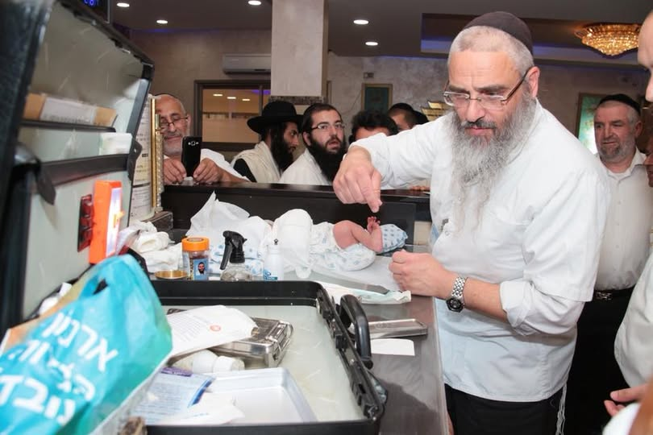
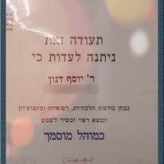
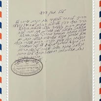

כמה דקות של תורה לקראת שבת המלכה. בכל שבוע שיעור קצר, שאלה לעיון ותשובת הרב.

נבחן בבחינות הלכתיות, רפואיות ומקצועיות, ונמצא ראוי וכשר לשמש כמוהל מוסמך.
הַכָּבוֹד הוּא לָנוּ שֶׁרַב בַּעַל מִדּוֹת כְּשֶׁלְּךָ מַכְנִיס אֶת בְּנֵנוּ בִּבְרִית הַמִּילָה. מִי יִתֵּן וְזֶה הַבֵּן מִמִּדּוֹתֶיךָ הַטּוֹבוֹת יֻשְׁפַּע, וִיהִי יְרֵא שָׁמַיִם וְעוֹסֵק בַּתּוֹרָה.
לקריאת המכתב המלא ←

